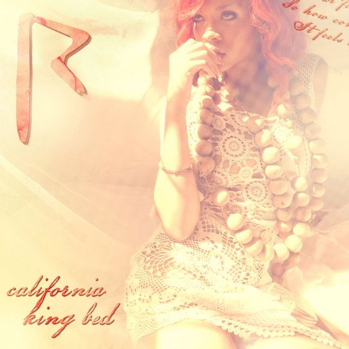

《Just the way you are》是由美国男歌手Bruno Mars主唱的一首歌，收录于专辑《Doo-Wops & Hooligans》，2010-7-20发行。 [...]
《Just the way you are》是由美国男歌手Bruno Mars主唱的一首歌，收录于专辑《Doo-Wops & Hooligans》，2010-7-20发行。 [...]
 在流行音乐的领域里，欧美流行音乐是整个流行乐的源头，它所起的作用是决定性的，所处的地位也是无可替代的。
在流行音乐的领域里，欧美流行音乐是整个流行乐的源头，它所起的作用是决定性的，所处的地位也是无可替代的。
See You Again
《See You Again》是由美国说唱歌手Wiz Khalifa和新人Charlie Puth共同演唱的一首歌曲,于2015年3月17日发行，该歌曲收录于电影《速度与激情7》的原声带中，也是该电影的片尾曲和主题曲。这首歌是为了缅怀因车祸逝世的演员Paul Walker而创作的。[...]
It's been a long day without you my friend
And I'll tell you all about it when I see you again
We've come a long way from where we began
Oh I'll tell you all about it when I see you again
Furious 7: Original Motion Picture Soundtrack